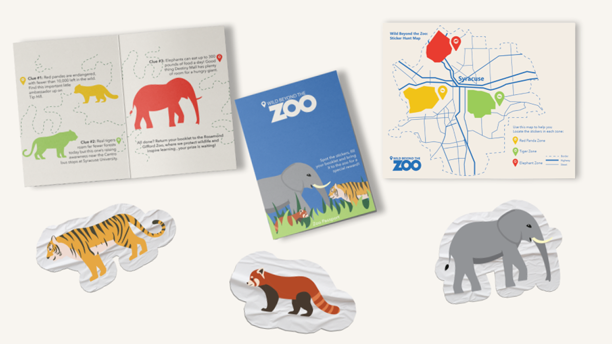
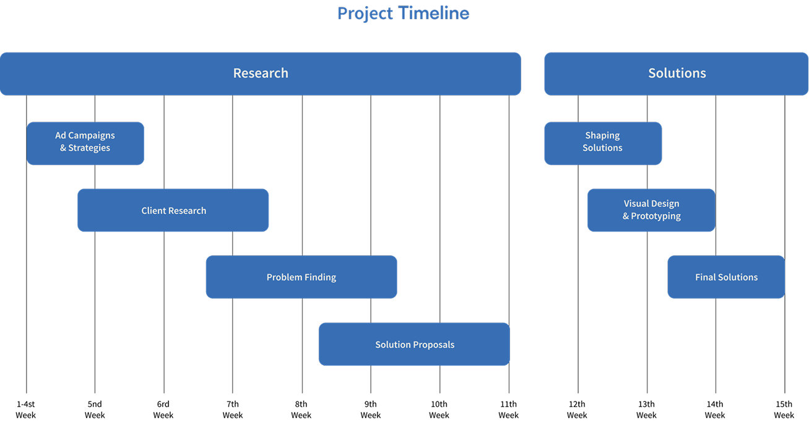
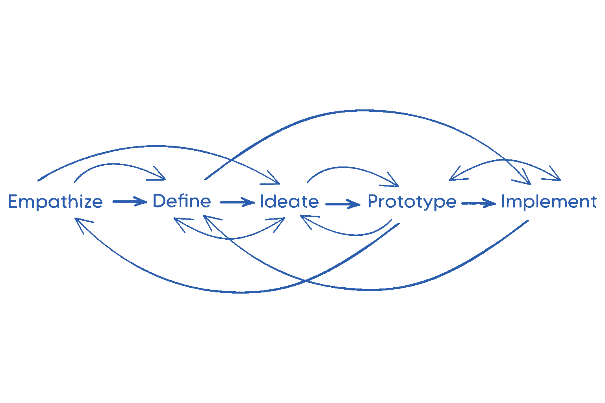
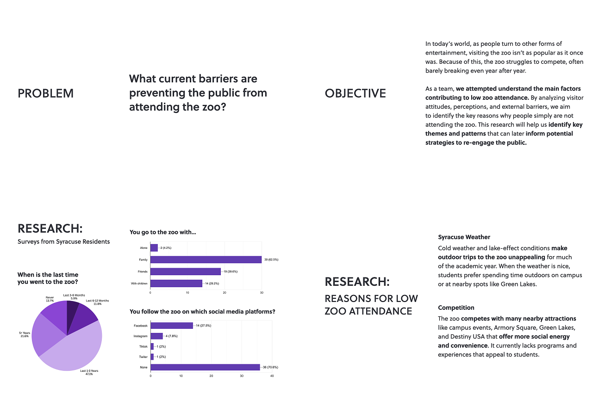
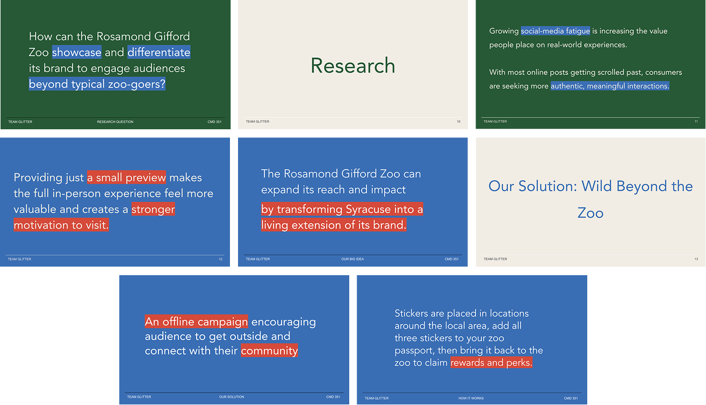
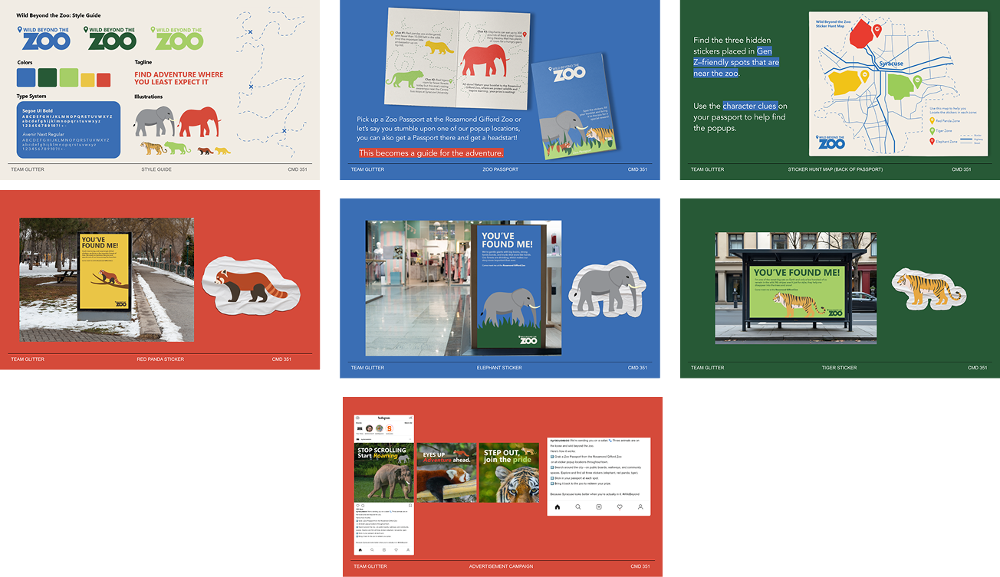

Collaborative design-thinking project developed for the Rosamond Gifford Zoo in Syracuse. Reimagining the zoo's brand as a citywide experience, using storytelling and interactive design to extend conservation messaging beyond zoo gates.

Each week, our group developed inherited ideas, pushed them forward, and presented findings showing clear progress. The structure mirrored real professional handoffs — teaching us how to collaborate across teams, absorb new information quickly, and maintain continuity in a long-term project.


"Instead of moving through these steps in a straight line, we constantly cycled back to earlier discoveries — revisiting research, reframing problems, and integrating new insights as they emerged."
This semester pushed us beyond traditional problem-solving and into problem finding — a deeper, more investigative approach to design. Instead of simply responding to what the client asked for, we learned to look beneath their initial requests to uncover root issues.
Teamwork this semester went beyond our assigned groups — our entire class functioned as one collaborative team. We constantly checked in with classmates who previously handled our project and ensured we could present the client with five unique solutions, each targeting a different issue.
Within our small groups, we organised meeting times, divided tasks, and brainstormed together each week. Clear communication, flexibility, and mutual support mirrored how real design teams operate across shifting roles and shared responsibilities.
To better understand visitor behaviour, I took the lead on research — conducting targeted secondary research and a follow-up interview with someone deeply familiar with the zoo experience: a person who visited throughout childhood, worked with the County Zoo, and now works at a nonprofit supporting the zoo's mission.
This allowed us to uncover nuanced insights into both visitor behaviour and the challenges faced by zoo staff, complementing our team's broader research findings.

In the final phase, our new team inherited a concept from a previous group. Through research and stakeholder constraints, we found ourselves needing to make a pivot in both concept and language.
The final solution became a two-part campaign: a simplified scavenger hunt placed in familiar Syracuse locations, paired with a supporting social media advertising campaign. Together, these elements create a cohesive brand experience that uses storytelling to highlight the zoo's commitment to conservation, education, and community connection.
Problem A purely digital campaign wouldn't reach people who aren't already engaged with the zoo online.
Decision Physical stickers and pamphlets placed at familiar Syracuse locations bring the zoo into everyday life.
Why it works Meeting people where they already are creates organic brand discovery without requiring existing awareness.
Problem Conservation messaging often feels distant or preachy — failing to create emotional connection.
Decision The campaign leads with animal stories and local connections rather than statistics.
Why it works Narrative-first messaging builds empathy and makes conservation feel personal and relevant.
Problem Previous iterations had visual inconsistency between physical materials and social content.
Decision Developed unified brand guidelines covering colour, type, and illustration style used across all touchpoints.
Why it works Cohesive visual language builds recognition and trust — essential for a public-facing brand campaign.
Problem Generic campaign placements fail to feel local or personally relevant to Syracuse residents.
Decision Sticker and advertising locations were strategically selected based on high foot-traffic Syracuse landmarks.
Why it works Local specificity signals that the zoo is part of the Syracuse community — not just an attraction to visit once.

I led the design of the pamphlet's interior layout and conducted supporting research to validate our solution. I also contributed to strategic discussions around sticker placement, advertising locations, and the development of the campaign's brand guidelines.

This project reinforced the importance of strong research as the foundation for design-driven solutions — learning how to ask better questions, identify real problems, and uncover meaningful insights. It taught me how to adapt within shifting team dynamics, stay flexible through constant changes, and collaborate effectively under pressure.
"Perseverance and clear communication can transform uncertainty into a strong, thoughtful outcome."
Designer, Researcher · Academic Project · Real Client